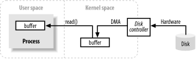
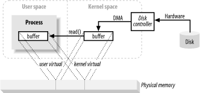

原文：http://howtodoinjava.com/core-java/io/how-java-io-works-internally-at-lower-level/
这篇文章主要讨论I/O操作在底层使如何工作的。主要介绍Java层的I/O操作是如何映射到机器层的，已经在我们的应用运行的时候硬件都做了那些事情。这里我假定大家在读这篇文章的时候已经熟悉了进本的I/O操作，比如使用Java I/O 的API来读写文件，因为本文不会涉及这些内容。
文章目录
缓冲区处理与内核空间、用户空间
缓冲区与缓冲区的操作是所以I/O的基础。“输入/输入”这个词的意义无非就是将数据移入与移出缓冲区。要时刻牢记这一点。通常，进程通过操作系统执行I/O操作，写操作就是将缓冲区内的数据清空，读操作是用数据填充缓冲区。这就是对I/O宏观上的总结。操作系统控制的机器在执行这些数据传输的时候可能相当的负责，但从概念上来说却是很简单的，接下来本文中将讨论其中的一小部分。

上面这张图展示了数据块是如何一步步的从硬盘读入到用户进程的内存中的。首先，用户进程通过read()系统调用请求数据来填充到它的缓冲区，内核收到这个系统调用，会向硬盘控制器发出一个读取硬盘数据的指令。硬盘控制器可以通过DMA可以直接往内核内存缓冲区写数据，不需要主CPU的任何协助。一旦硬盘控制器将内核内存缓冲区填满之后，内核就将数据冲内核这个临时缓冲区Copy到特定的内存缓冲区。
需要值得注意的一点是，内核会尝试缓存或者提前拉取数据，这样用户进程请求的数据可能已经存在在内核空间里面了。如果请求的数据已经在内核空间，那么只需要将数据从内核空间Copy到用户空间，如果没有，用户进程将被挂起，内核负责将数据从硬盘读入到内核空间。
虚拟内存
之前你可能已经听过虚拟内存这个词很多次了，
现代所有的操作系统都使用了虚拟内存。虚拟内存意味着，操作系统使用的是人工的虚拟的内存地址而不是真实的物理内存地址。使用虚拟内存有两大好处：
- 多个虚拟内存地址可以指向物理内存的同一位置
- 虚拟内存空间可以大于实际物理内存可用空间
上面一节中提到的将数据从内核空间Copy到用户空间看起来像是无用功，为什么不直接告诉硬盘控制器直接将数据发送到用户空间？通过虚拟内存可以实现这一点，具体实现是使用了上面的第一条好处。
将内核空间地址映射为用户空间使用的虚拟地址对应的物理地址，DMA（只能操作实际的物理内存地址）就可以只往内存中填充一个缓冲区，实现同时对于内核和用户空间都是可见的。

这样的话就减少了一次内核空间与用户空间内存之间的拷贝，但有个前提条件是内核和用户缓冲区的内存页是对齐的。缓冲区的大小也必须是磁盘控制器使用的块的大小的整数倍。操作系统将内存空间划分为许多固定大小的页。这些页的大小是磁盘块大小的整数倍，通常是块大小的2的幂次方倍。一般内存页大小为1024byte，2048byte或者4096byte。虚拟内存页与物理内存页大小通常是一致的。
内存分页
为了实现虚拟内存的第二个好处（地址空间大于实际物理内存），必须对内存进行分页处理（通常指的是内存交换）。为了能够使物理内存有足够的空间作为虚拟内存使用，一些虚拟内存的页必须放到磁盘上存储起来。